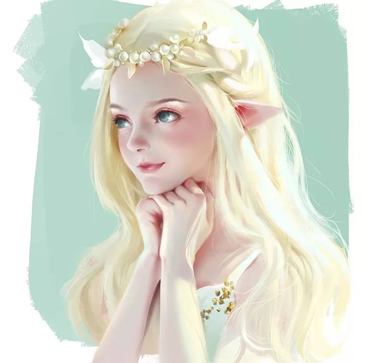
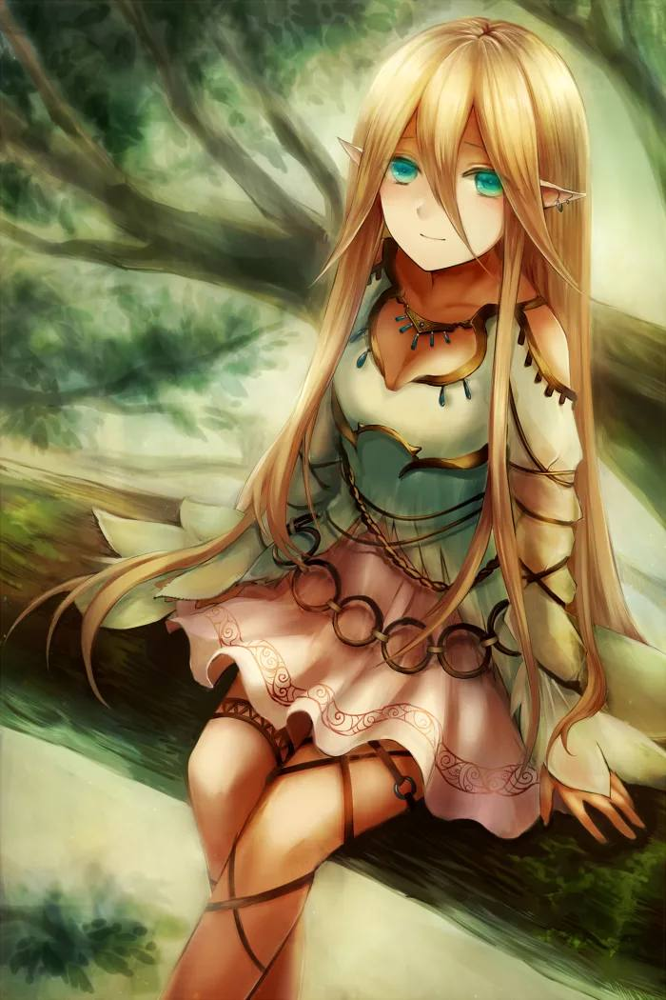
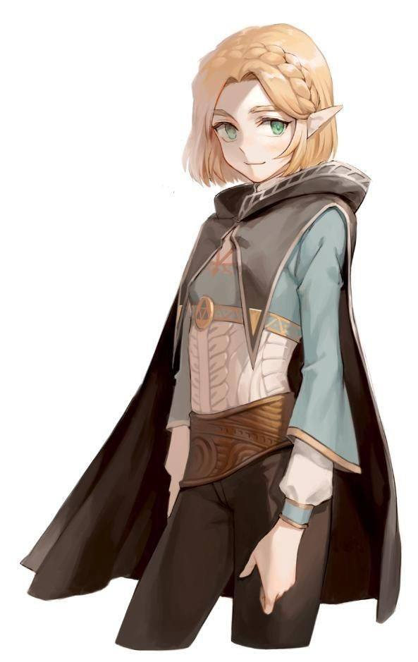
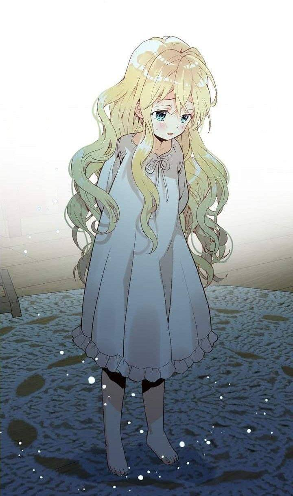
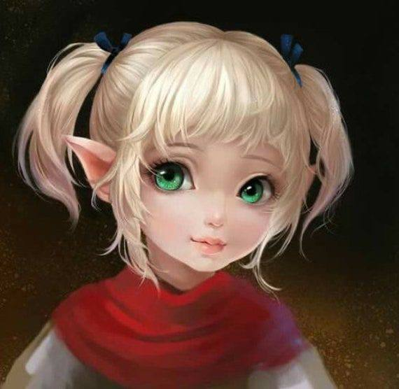

| Имя | Лисса |
|---|---|
| Пол | ж |
| Возраст | Возраст считать не принято. После 100-200 лет это всем надоедает, а возрастом хвастаются в основном «малолетки». |
| Раса | Альв (именно эта форма, ибо классические эльфы в мире есть, но её народ от них отличается) + Вампир (была обращена уже во осознанном возрасте) |
| Класс | Паладин | Внешность | Внешне девочка лет 10-12. Сразу бросаются в глаза длинные уши (прим 15 см), расположенные почти перпендикулярно голове. В ушах много серёжек-колечек (они ритуальные, связаны с религией). Кожа бледная. Глаза большие, выразительные, а радужка зелёного цвета (зелёный меняет контрастность и яркость, в зависимости от силы природной магии), но во время голода краснеет (степень жажды по тому же принципу). В остальном похожа на картинку. |
| История | В её жизни было всё: и жестокая семья, и насильное обращение в вампира, и верная служба, и смерть близких, и предательство. Она даже побывала в Аду и вернулась. Сейчас Лисса служит Повелителям, помогая открывать закрытые измерения и принимая попаданцев. Родилась и выросла в Лесу Высоких деревьев среди других альв. В их народе детей воспитывают жрицы. Они поклоняются природе и жестоко наказывают тех, кто противен богине, по их мнению. Полуживых существ (вампиров, демонов и тд) они часто приносят в жертву, жестоко пытают. Лисса чувствовала себя угнетенной и чужой в собственном народе, но старалась следовать правилам. Много раз она «грешила», потому что была слишком любопытна к внешнему миру. За это ей прокалывали уши. Каждое кольцо в ухе альфа означает непростительный грех против самой природы. Однажды из любопытства она сбежала от наставниц на окраину леса, чтобы увидеть внешний мир. Там она встретила голодного вампира. Лисса поделилась с ним кровью, доверчиво рассказала о себе и своём народе. Вампир из мести обратил её в себе подобную. Народ от неё отрёкся. Лиссу чуть не убили, но благодаря новой ментальной магии она сбежала. Жрицы назвали её предательницей. После нескольких лет скитаний она встретила Повелителя (правители этого мира). Лисса стала его Рукх (аналог десницы, но связанный магической клятвой). Многие десятилетия она была ему предана больше, чем кому бы то ни было. Но Повелитель был проклят: он сходил с ума и его безумие влияло на мир. Они отстранились от внешнего мира. Лисса ухаживала за ним, пытаясь оттянуть неизбежное. Она знала, что однажды он отдаст роковой приказ. В это же время за ними начинает следить демон, посланный убить Повелителя. По воле судьбы этот самый демон и Лисса влюбляются. Они знают, что их история закончится трагично: либо один из них убьёт другого, либо кто-то убьёт Повелителя или Отца (хозяина демона). День Х. Демон приходит, чтобы убить Повелителя. Лисса с помощью внушения разыгрывает их схватку, его победу и смерть Повелителя. Тем временем настоящий Повелитель отдаёт Лиссе приказ прекратить его мучения, убив его. В мире эта ситуация известна так: демон убил Повелителя по приказу Отца. За весь этот спектакль Лисса попадает в местный аналог ада, Нижний мир. Туда можно попасть и при жизни, но только если есть огромная вина за содеянное. Лисса убила своего Повелителя, которому была предана до конца, и предала возлюбленного, который теперь считает её мертвой. |
Фото |      |